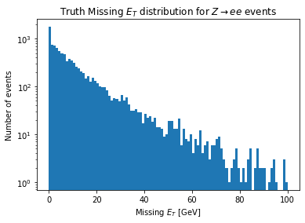

Missing \(E_T\)¶
The missing energy is, from a technical point of view, funny in two respects:
It depends on pretty much all other objects in the event. So if you apply a correction to another object, you are forced to recalculate the Messing \(E_T\).
It is stored as a collection of Missing \(E_T\) objects. But, in reality, you are only ever interested in one of them.
from func_adl_servicex_xaodr21 import SXDSAtlasxAODR21
import matplotlib.pyplot as plt
from config import rucio_zee_r21_mc
ds = SXDSAtlasxAODR21(rucio_zee_r21_mc, backend='dev_xaod')
We grab the first Missing \(E_T\) item in the collection, as is usual for the MET_Truth bank here. Since func_adl works in terms of sequences, not arrays, we do this by picking off the First item.
events = (ds
.Select(lambda e: e.MissingET("MET_Truth").First().met()/1000.0)
.AsAwkwardArray('met')
.value())
plt.hist(events.met, bins=100, range=(0, 100))
plt.xlabel('Missing $E_T$ [GeV]')
plt.ylabel('Number of events')
plt.yscale('log')
_ = plt.title('Truth Missing $E_T$ distribution for $Z\\rightarrow ee$ events')

The Datamodel¶
The data model when this documentation was last built was:
from func_adl_servicex_xaodr21.xAOD.missinget_v1 import MissingET_v1
help(MissingET_v1)
Help on class MissingET_v1 in module func_adl_servicex_xaodr21.xAOD.missinget_v1:
class MissingET_v1(builtins.object)
| A class
|
| Methods defined here:
|
| met(self) -> float
| A method
|
| mpx(self) -> float
| A method
|
| mpy(self) -> float
| A method
|
| phi(self) -> float
| A method
|
| sumet(self) -> float
| A method
|
| ----------------------------------------------------------------------
| Data descriptors defined here:
|
| __dict__
| dictionary for instance variables (if defined)
|
| __weakref__
| list of weak references to the object (if defined)
Further Information¶
The
xAOD::MissingET_v1C++ header file with all the inline documentation.Slides from a tutorial on Missing ET